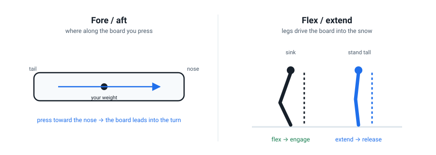

Pressure: Fore/Aft & Flexion–Extension
Edging decides whether the board grips. Pressure decides how hard, and where along the board you push — and that is what actually shapes a turn. It is also the dial most beginners ignore completely.
Pressure is three things at once
The AASI fundamentals split pressure into three separate jobs (Performance Guide):
- Fore / aft — where you press along the length of the board: front foot or back foot.
- Across the width — which edge you press into (this overlaps with Lesson 3's edging).
- Magnitude — how hard you press, total.
For a rider learning to turn, fore/aft is the one that changes everything, so that is our focus here.

Fore/aft is the turn-maker
Here is the mechanic, straight from the instructor standard: as a turn begins, your centre of mass moves toward the nose, letting the front of the board lead into the new turn. As the turn finishes, it moves progressively toward the tail (AASI Performance Guide).
In plain terms: press your front foot to start a turn, and let the pressure drift back as you finish it. A rider who keeps weight on the back foot can skid around all day and never gets a clean, controlled turn. This is the second most common beginner fault after sitting back — and it is the same fault.
Flexion and extension: how you deliver pressure
You change pressure by flexing (sinking) and extending (standing tall) your legs:
- Extend (stand tall) → the board flattens under you and the edge releases.
- Flex (sink) → you press the board into the snow and the edge engages.
The beginner-friendly version of this is the "stand up to change edge" drill: traverse across the slope, then stand tall — which flattens the board and lets your hips cross over — then sink down onto the new edge. Malcolm Moore rates it highly precisely because it safely crosses your centre of mass over the board (Turn Exercises, Ranked Worst to Best).
Initiation — extend, letting the board flatten and your body cross. Control — flex, pressing the edge and managing the arc. Completion — extend again into the next turn. That rhythm — tall, sink, tall — is the pulse of riding.
The ski-pole drill — pressure feedback you can see
Rest a ski pole (or a broom handle) between your palms and the tops of your thighs, and ride a gentle slope. Keep the pole parallel to your board all the way through each turn. It is a live read-out: if you twist or rotate too much, the pole drops; if your posture collapses, the pole tilts. It keeps your whole body moving as one unit — the same idea as the arm-out-front drill, but without the nasty edge-catch (Malcolm Moore).
- Dip and rise (off-snow first). Stand in your athletic stance and do 20 slow "sink → stand tall" reps. This is the exact movement you'll use on snow.
- Feel the release. Traverse on one edge across a gentle slope. Flex to grip, then extend to feel the board flatten and start to slip. Repeat, alternating.
- Stand-up edge change. On a very gentle pitch, traverse, stand tall to cross your weight over the board, and sink onto the other edge. This is a turn's skeleton, without the scary bits.
- Pole drill (if you have a pole). Ride a semi-straight run holding the pole against your thighs. Do not let it drop.
Check your understanding
1. Pressing toward the nose as a turn begins…
Weight toward the nose at initiation lets the front of the board lead into the new turn. Weight drifts toward the tail as you finish. That is the AASI fore/aft model.
2. To release the edge, you should…
Extension flattens the board and releases the edge — that's what lets you safely cross to the new edge. Flexion does the opposite: it engages the edge.
3. Dropping your centre of mass at the edge change is called…
Down-unweighting: dropping toward the floor at the edge change releases the pressure through the board, giving a fast, strong edge change. Its opposite is up-unweighting (standing tall).
4. The ski-pole drill gives you live feedback on your…
The pole sits between your palms and thighs. If you over-rotate or collapse your posture, it drops — instant feedback on the two things you can't see yourself doing.
Watch it, don't just read it
- Snowboard Turn Exercises, Ranked Worst to Best Malcolm Moore · the stand-up edge change, the ski-pole drill, and down-unweighting, all explained in one video.
- How to Snowboard: A Beginner's Guide — Part 3 PSIA-AASI · see the extend/flex rhythm applied to sideslips and garlands.
- Snowboard Pro Camp Ex-Whistler instructor · alternative drills for pressure and weight transfer.

Read the AASI Snowboarding Fundamentals (PDF) for the fore/aft and magnitude definitions in full — it is the source for the "nose at initiation, tail at finish" rule. Then watch Malcolm Moore's Turn Exercises for the drills.
Your teacher is right here
Can't tell whether you're pressing the front foot or just leaning back? Confused about when to flex versus extend? This is the fiddliest dial — bring me what you feel and I'll help you name it.
Snowboarding Fundamentals · lessons/0004-pressure-and-flexion.html